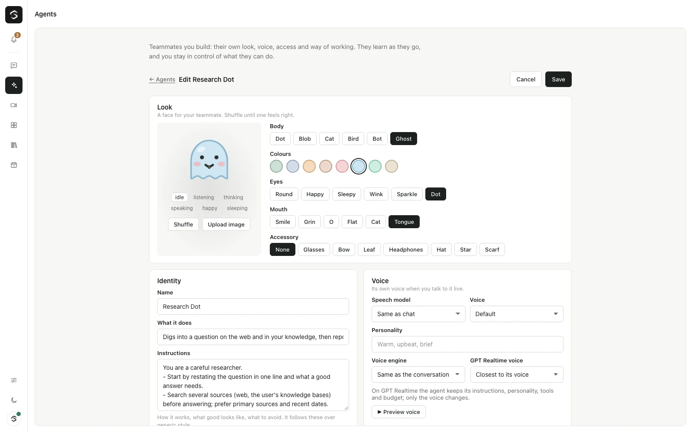
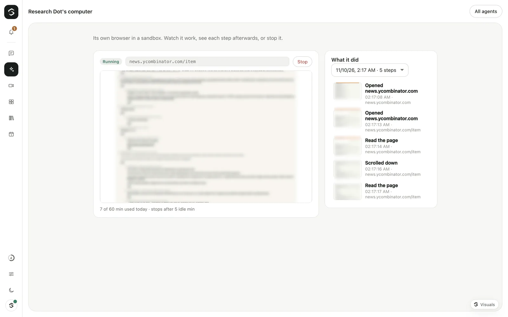

Your team of agents
Start from a template or a blank agent. Each one shows its autonomy and access at a glance, and you can chat with it or open its computer.
Agents docs
Sibyl Agents · Open source · Part of Sibyl
Give an agent a name, a face, a voice and instructions. Decide what it may use and how much it may do on its own. It can have its own sandboxed browser that you watch live, work in Slack and Teams, and run on a schedule.
Start from a template or a blank agent. Each one shows its autonomy and access at a glance, and you can chat with it or open its computer.
Agents docsAn agent never gets more than you have. Choose Everything I can use or a controlled list, and Ask me first, Act then tell me, or Fully autonomous. Sending money, deleting and sharing outside always ask.
Access and autonomy docs
With a computer turned on, an agent opens real web pages in a sandbox on your server. Its screen shows live in the side panel next to the chat.
Agent computers docs
The computer page keeps a picture of each step it took, grouped by run. Stop it at any time; it also stops on its own when idle.
Agent computers docs
There is no subscription. You pay your model provider (through your OpenRouter key) for what you use. These are real numbers we measured; prices move as providers change theirs.
| What | Cost | Where the number comes from |
|---|---|---|
| An agent's turn | the same as a chat turn | Agents use the same models and budgets as chat |
| Agent computer time | free by default | It runs on your machine; set SIBYL_COMPUTER_USD_PER_HOUR to price it |
| Our test: three browsing tasks | 7 computer minutes | Out of 60 a day by default, measured 2026-11-10 |
Sibyl Agents is part of the one Sibyl install, with the other products. You need an OpenRouter API key.
git clone https://github.com/Suryanandx/sibyl.git && cd sibyl && cp .env.example .env && docker compose up --buildSet OPENROUTER_API_KEY in .env, then open http://localhost:3000 and create the owner account. The quickstart on GitHub also covers running it with Node.js.